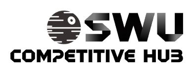

SWUDB or star wars unlimited database, is a system that allows you to digitally assemble and customize decks with all of the card that exist in the game. It is a valuable tool for looking at combos and preparing a lst of cards to aquire.
It also allows players to export their deck list in Json format to a play testing site.

SWU Competitive Hub is a database of recent winner from significant tournaments. This is a useful tool for people who are looking for a deck they can copy to grab and play.
It is also very useful for more experineced players who want to prepare against what is popular for tournaments.
Forcetable is an AI supported algorithm that plays against you in games when you input your deck list.
The AI makes very linear and simple moves so it may be easy to defeat, but it can still be good pratice for iunderstanding your deck or the game as a whole.